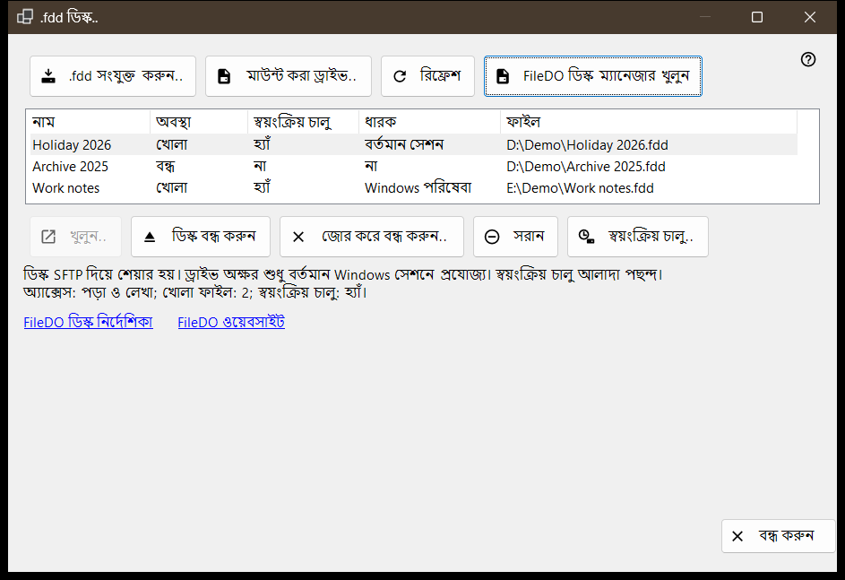
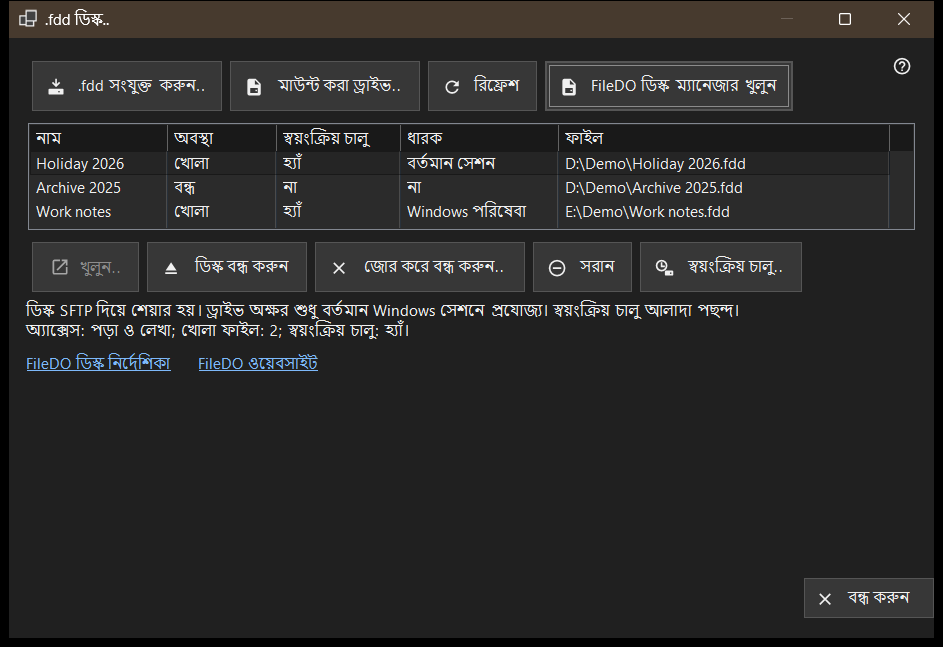

.fdd ডিস্ক
এটি কীসের জন্য
এই পিসি SFTP-তে যে FileDO .fdd ডিস্কগুলো শেয়ার করে সেগুলোর তালিকা দেখায় এবং প্রতিদিনের ডিস্ক কমান্ড দেয়: ডিস্ক সংযুক্ত করা, খোলা বা বন্ধ করা, শেয়ার বন্ধ করা, এবং সার্ভারের সঙ্গে সেটি খুলবে কি না ঠিক করা। এটি Share Manager-এর মূল উইন্ডোর যোগ করুন মেনুর .fdd ডিস্ক.. আইটেম থেকে খোলে।


এই ক্রমে
- .fdd সংযুক্ত করুন.. বোতাম চাপুন, .fdd ফাইল বেছে নিন এবং বিকল্প ডায়ালগ নিশ্চিত করুন।
- তালিকায় ডিস্কটি নির্বাচন করুন; তালিকার নিচের লাইনে তার অ্যাক্সেস মোড, খোলা ফাইল ও স্বয়ংক্রিয় চালু দেখায়।
- বন্ধ ডিস্কের জন্য খুলুন.., খোলা ডিস্কের জন্য ডিস্ক বন্ধ করুন, আর স্বয়ংক্রিয়ভাবে খোলা বদলাতে স্বয়ংক্রিয় চালু.. ব্যবহার করুন।
- অবস্থা আবার পড়তে রিফ্রেশ চাপুন; উইন্ডোটি প্রতি 10 সেকেন্ডেও তা আবার পড়ে।
- বেরোতে বন্ধ করুন চাপুন।
উপাদানসমূহ
ডিস্ক তালিকা
প্রতিটি সারি একটি শেয়ার করা ডিস্ক: নাম, অবস্থা (খোলা, খোলা হচ্ছে, বন্ধ হচ্ছে, বন্ধ, লক করা, ত্রুটি বা অজানা), স্বয়ংক্রিয় চালু, ধারক এবং .fdd ফাইলের পথ (কলাম ফাইল)। ধারক বলে কে ডিস্কটি খোলা রেখেছে: Windows পরিষেবা, বর্তমান সেশন, অথবা কেউ না রাখলে না। পুরো পথ দেখতে সারির ওপর কার্সর রাখুন। প্রথম সারিটি নিজে থেকে নির্বাচিত হয়, আর তালিকার নিচের লাইনে তার অ্যাক্সেস (শুধু পঠনযোগ্য বা পড়া ও লেখা), খোলা ফাইলের সংখ্যা এবং স্বয়ংক্রিয় চালু দেখায়। শেয়ারিং সার্ভিস ডিস্ক শেয়ার করতে না পারলে তালিকা ও কমান্ড বোতামগুলো লুকিয়ে যায় এবং ওই লাইনে কারণ লেখা থাকে; আর ডিস্কটি FileDO নিজেই মাউন্ট করে রাখলে FileDO ডিস্ক ম্যানেজার খুলুন লিঙ্কটি দেখা যায়।
.fdd সংযুক্ত করুন..
একটি .fdd ফাইল বেছে নিন এবং শেয়ারের জন্য নিবন্ধন করুন। বিকল্প ডায়ালগ নাম, শুধু পঠনযোগ্য পছন্দ এবং নিবন্ধনের পরে খুলুন (ডিফল্টভাবে টিক দেওয়া) জানতে চায়। এনক্রিপ্ট করা ডিস্কের জন্য সেটি পাসওয়ার্ডও চায়, আর ডিস্কটিকে আপনি ড্রাইভ অক্ষর দিতে পারেন বা অক্ষর ছাড়া - শুধু শেয়ার রাখতে পারেন। অক্ষরটি শুধু বর্তমান Windows সেশন পর্যন্ত থাকে। ডিস্কটি এখনও FileDO-তে খোলা থাকলে আগে সেখানে সেভ করে বন্ধ করুন। নিবন্ধন সফল হয়েও ডিস্ক না খুললে একটি বার্তা তা জানায় এবং ডিস্কটি বন্ধ অবস্থায় তালিকায় থাকে।
মাউন্ট করা ড্রাইভ..
এই পিসির কোনো প্রস্তুত ড্রাইভ বেছে নিন, যেমন FileDO ইতিমধ্যে মাউন্ট করেছে এমন ডিস্ক। উইন্ডো বন্ধ হয় এবং মূল উইন্ডো ওই ড্রাইভের জন্য তার স্বাভাবিক ফোল্ডার যোগ করার ধাপে এগিয়ে যায়।
খোলা, বন্ধ করা ও সরানো
খুলুন.. বন্ধ, লক করা বা ব্যর্থ ডিস্ক আবার খোলে এবং এনক্রিপ্ট করা ডিস্কের পাসওয়ার্ড চায়। ডিস্ক বন্ধ করুন শুধু খোলা ডিস্কের জন্য পাওয়া যায়; ক্লায়েন্টরা সাময়িকভাবে অ্যাক্সেস হারায় এবং খোলা ফাইলগুলো বন্ধ হতে 30 সেকেন্ড পর্যন্ত সময় পায়। জোর করে বন্ধ করুন.. খোলা ফাইলগুলোকে সঙ্গে সঙ্গে বিচ্ছিন্ন করে, তাই সংরক্ষণ না করা ডেটা হারিয়ে যেতে পারে। সরান শেয়ার বন্ধ করে: ডিস্ক বন্ধ হয়, তার স্বয়ংক্রিয় চালু সেটিং ও সংরক্ষিত কী মুছে যায়, আর .fdd ফাইল থেকে যায়। এগুলোর প্রতিটি আগে নিশ্চিতকরণ চায়, এবং ডিফল্ট উত্তর বাতিল।
স্বয়ংক্রিয় চালু
স্বয়ংক্রিয় চালু কলাম প্রতিটি ডিস্কের জন্য নির্বাচন না করেই হ্যাঁ বা না দেখায়। ড্যাশ (-) মানে শেয়ারিং সার্ভিস স্বয়ংক্রিয় চালু সমর্থন করে না; তখন স্বয়ংক্রিয় চালু.. বোতাম নিষ্ক্রিয় থাকে। স্বয়ংক্রিয় চালু.. নিশ্চিতকরণের পরে সেটিংটি বদলায়: চালু করলে ডিস্ক সার্ভারের সঙ্গে খোলে এবং এনক্রিপ্ট করা ডিস্কের পাসওয়ার্ড এই পিসির সুরক্ষিত Windows ভান্ডারে রাখা হয়; বন্ধ করলে সেই সংরক্ষিত কী মুছে যায়। সেটিংটি অবস্থার ওপর নির্ভর করে না, তাই বন্ধ বা ব্যর্থ ডিস্কেও স্বয়ংক্রিয় চালু থাকতে পারে। মূল উইন্ডোর তালিকাগুলোয় FileDO-এর সারিগুলোও এটি দেখায়।
নির্দেশিকা, ওয়েবসাইট ও বন্ধ করুন
FileDO ডিস্ক নির্দেশিকা ও FileDO ওয়েবসাইট FileDO-র নির্দেশিকা ও সাইট খোলে; ডিস্কগুলো ওই প্রোগ্রাম থেকেই আসে। এই পিসিতে FileDO ডিস্ক ম্যানেজার না পাওয়া গেলে উইন্ডো জানায় FileDO-র ওয়েবসাইট থেকে তা ইনস্টল করতে। বন্ধ করুন উইন্ডো থেকে বেরোয়; ডিস্কে কোনো অপারেশন চলার সময় উইন্ডো বন্ধ করা যায় না।
ম্যানেজার সেটিংস · SFTP শেয়ারিং সেটিংস · এক্সচেঞ্জ সার্ভার সেটিংস